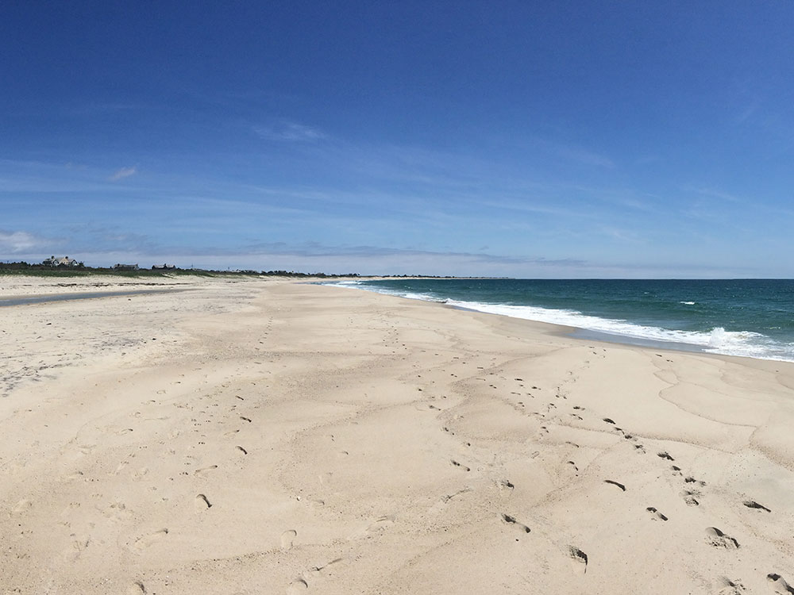
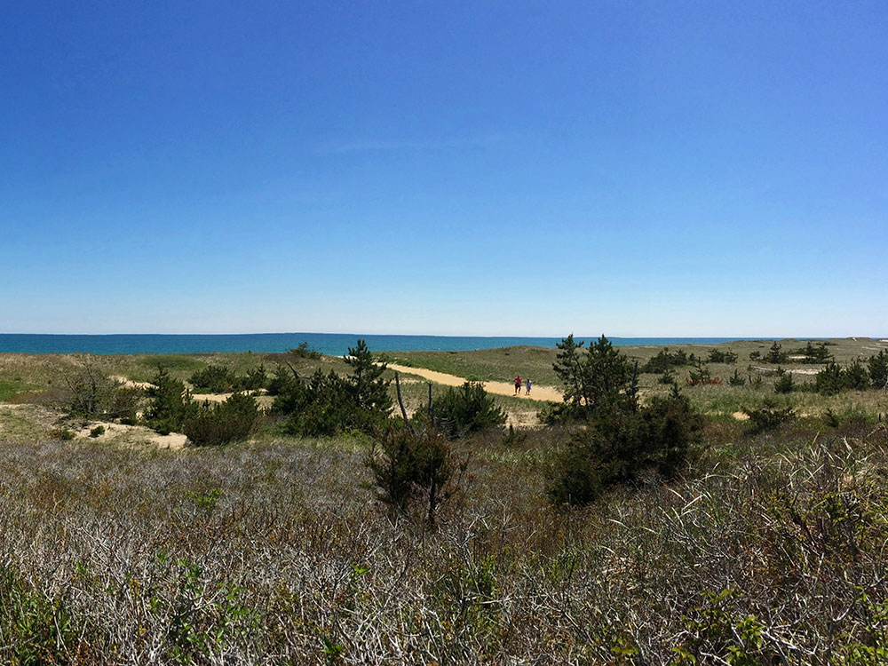
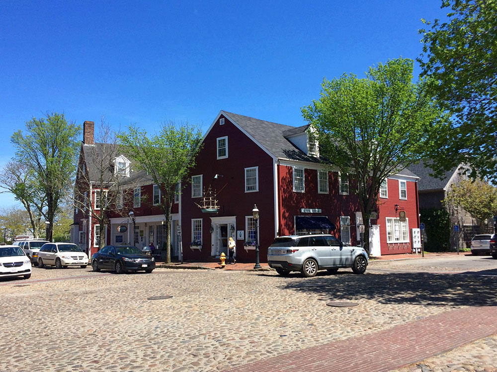
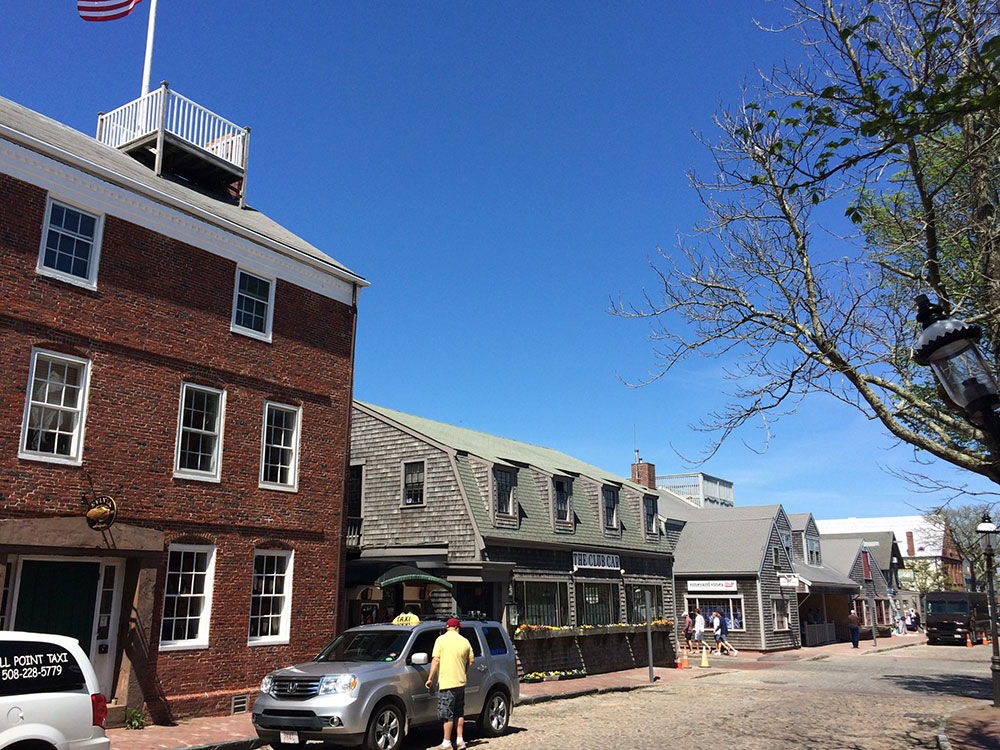
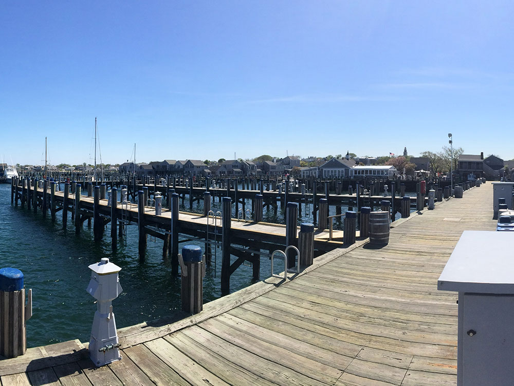
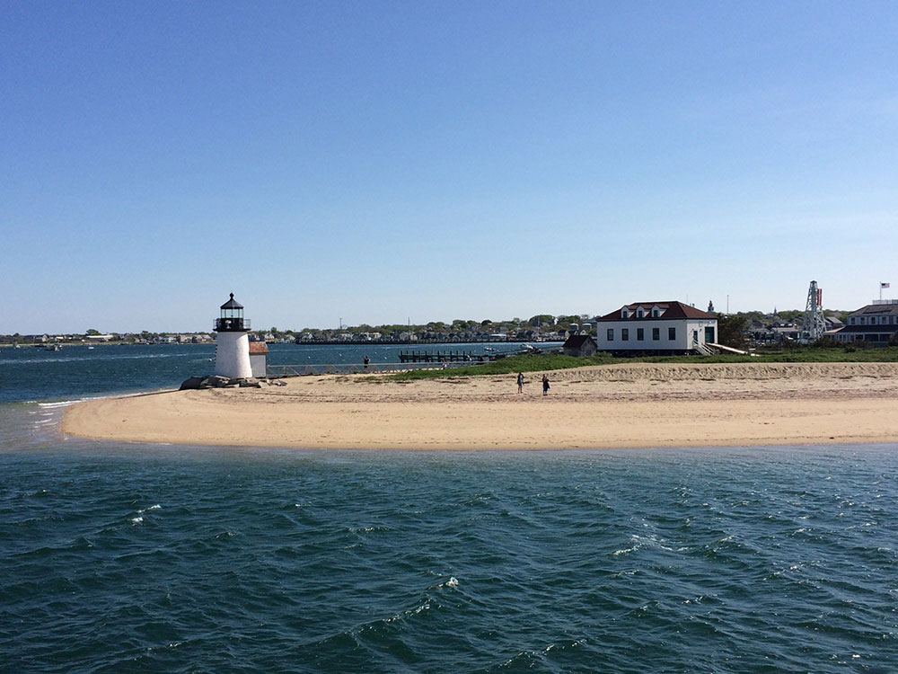
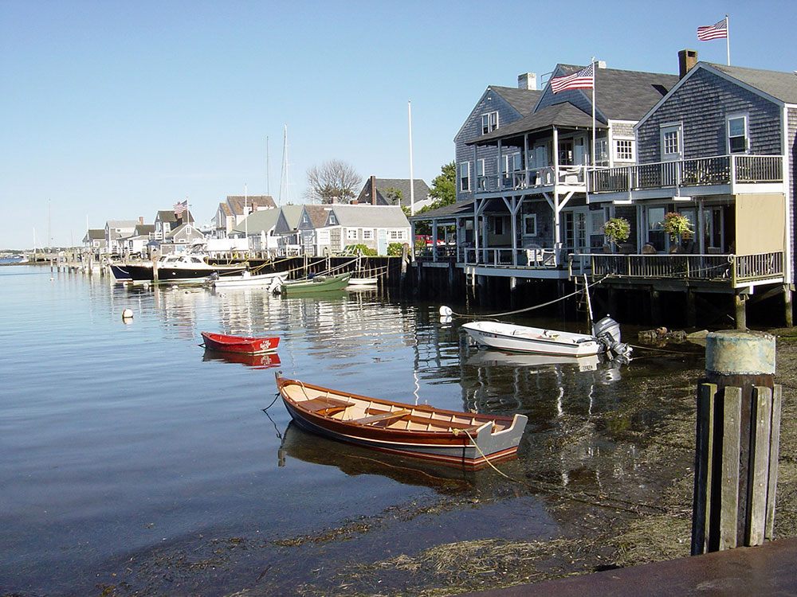
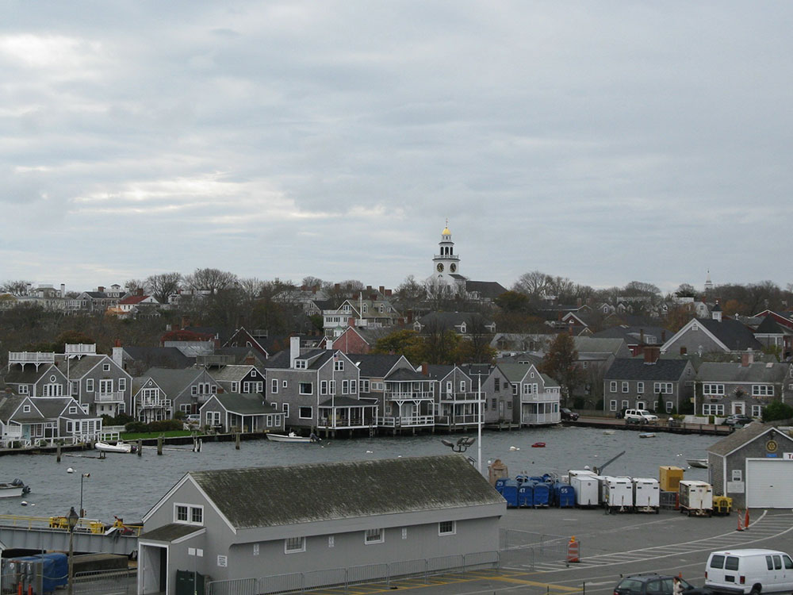

Island about 30 miles (50 km) by ferry south from Cape Cod, known as a tourist destination and summer colony
General Information
How to Get There
From Hyannis, MA (30 mi by ferry): Travel to the Hyannis ferry terminal, board the ferry to Nantucket Island, arrive at Nantucket Harbor, and continue into downtown Nantucket.
Overview
Nantucket is an island about 30 miles south of Cape Cod, accessible only by ferry or plane, and it is known for its cobblestone streets, gray-shingled cottages covered in climbing roses, and a history as one of the world's greatest whaling ports. The island, a National Historic Landmark, has some of the finest collections of pre-Civil War architecture in the country, along with 80 miles of beaches and a quiet, upscale resort atmosphere. Nantucket is both a town and a county, and its summer population is many times its year-round size.
Visitors come to Nantucket for the beaches, for the historic town with its Main Street and wharves, and for the Nantucket Whaling Museum. They also come for biking on the island's trails, for the lighthouses such as Brant Point and Sankaty Head, for the sunsets, and for the seafood, and the island has a reputation as a destination for sailing, fishing, and relaxation.
History
The island was home to the Wampanoag people, and in 1659 English settlers, led by Thomas Macy, bought it and began farming and sheep raising. In the 1700s and early 1800s, Nantucket became the leading whaling port in the world, with a fleet that hunted sperm whales for the oil that lit lamps across the globe, and the wealth built the grand houses on Main Street. A Great Fire in 1846 destroyed much of the downtown, and the decline of whaling in the mid-nineteenth century left the island economically depressed, which preserved its architecture. In the late twentieth century, it was rediscovered as a summer resort, and a strong preservation ethic has kept its historic character. Herman Melville's Moby-Dick features Nantucket whalers.
Sightseeing and Popular Landmarks
Main Street, with its cobblestones and brick sidewalks, is lined with historic houses, shops, and restaurants, and the Nantucket Whaling Museum is in a former candle factory with a skeleton of a sperm whale. The Brant Point Lighthouse, one of the smallest in the country, is at the harbor entrance, and the 'Sconset village on the east end is known for its rose-covered cottages. Sankaty Head Light, a red-banded lighthouse, stands on a bluff on the east shore, and Old Mill, built in 1746, is the oldest working windmill in the country.
Culture and Museums
The Nantucket Historical Association runs the Whaling Museum and a number of historic houses and sites, and the Maria Mitchell Association honors the first professional female astronomer in America, who was born on the island. The Nantucket Lightship Basket Museum shows the island's famous woven baskets, and the Nantucket Atheneum is a historic library. The Nantucket Film Festival in June and the Daffodil Festival in April are popular events.
Parks
Nantucket's beaches include Jetties Beach, Surfside Beach, and Madaket, with views of dramatic sunsets, and the Coskata-Coatue Wildlife Refuge protects dunes and shorebirds on a peninsula in the northeast. The island has more than 30 miles of paved bike paths, and the Nantucket Conservation Foundation protects about a third of the island, with hiking trails through moors and cranberry bogs. Fishing, kayaking, and sailing are popular.
Seasons and Weather
Nantucket has a humid continental climate strongly moderated by the ocean. Summers are comfortable, with highs in the upper 70s°F, and winters are milder than the mainland's, with highs in the 30s and 40s°F and about 25 inches of snow. Summer is the busiest season, and many businesses close from late fall to spring. Fog and wind are common, and ferries can be canceled in bad weather.
Planning Your Visit
Nantucket is a historic island located approximately 30 miles off the coast of Cape Cod, Massachusetts. Known for its cobblestone streets, whaling history, scenic beaches, lighthouses, bicycle paths, and preserved New England architecture, the island is one of the most popular summer destinations in the Northeast. Because there is no bridge connecting Nantucket to the mainland, most visitors arrive by ferry, although commercial and private flights are also available year-round.
Once on the island, visitors can easily explore using public transportation, bicycles, rental cars, taxis, and guided tours. Nantucket's compact size, extensive bike path network, and free public bus system make it possible to experience much of the island without bringing a vehicle.
Getting to Nantucket
| Transportation | Travel Time | Typical Adult Price | Overview |
|---|---|---|---|
| Steamship Authority High-Speed Ferry | Approximately 1 Hour | Approximately $93 Round Trip | Fast passenger ferry service between Hyannis and Nantucket. |
| Steamship Authority Traditional Ferry | Approximately 2.5 Hours | Approximately $22 Round Trip Passenger Fare | Vehicle and passenger ferry service operating year-round. |
| Hy-Line High-Speed Ferry | Approximately 1 Hour | Approximately $97 Round Trip | Seasonal passenger-only ferry service from Hyannis. |
| Regional Flights | 45-90 Minutes | $150-$400+ | Seasonal and year-round service from Boston, New York, Washington, and other Northeast cities. |
The most popular transportation options are the high-speed ferries from Hyannis, while the traditional Steamship Authority ferry is the preferred choice for visitors bringing vehicles.
Getting Around Nantucket
| Transportation Method | Typical Cost | Best For |
|---|---|---|
| Walking | Free | Exploring downtown Nantucket, the harbor, shops, restaurants, and museums. |
| The Wave Bus System | Free | Traveling to beaches, Siasconset, Madaket, and other popular destinations. |
| Bicycle Rentals | $25-$50 Per Day | Exploring beaches, bike paths, and scenic areas around the island. |
| Taxi & Ride Share | Varies by Distance | Convenient trips to remote beaches and accommodations. |
| Rental Cars & Jeeps | $75-$150+ Per Day | Accessing remote sections of the island and transporting larger groups. |
Nantucket's extensive network of bike paths and free public transportation make it one of the easiest island destinations in New England to visit without a vehicle.
Popular Ways to Explore the Island
| Activity | Typical Price | Overview |
|---|---|---|
| Island Bus Exploration | Free | Visit Surfside Beach, Madaket, Siasconset, and mid-island destinations using The Wave. |
| Bicycle Touring | $25-$50 | Ride more than 30 miles of dedicated bike paths connecting beaches and villages. |
| Guided Island Tour | $40-$80 | Discover Nantucket's maritime history, architecture, and landmarks with a local guide. |
| Lighthouse Excursions | $20-$60 | Visit Sankaty Head Lighthouse, Brant Point Lighthouse, and Great Point Lighthouse. |
| Beach Exploration | Free to Minimal Cost | Experience popular beaches including Surfside, Jetties, Cisco, and Madaket. |
Must-Visit Areas
- Downtown Nantucket – Historic district featuring cobblestone streets, whaling-era architecture, shopping, and dining.
- Siasconset ("Sconset") – Quaint village known for rose-covered cottages and coastal scenery.
- Madaket – Popular sunset destination on the western side of the island.
- Surfside Beach – One of Nantucket's most popular ocean beaches.
- Great Point – Remote coastal area featuring a historic lighthouse and outstanding wildlife viewing.
Average Visitor Transportation Costs
| Category | Average Cost Per Person |
|---|---|
| Round-Trip Ferry Transportation | Approximately $22-$97 |
| Bicycle Rental | Approximately $40 Per Day |
| Guided Island Tour | Approximately $60 Per Person |
| Rental Car | Approximately $100 Per Day |
| Island-Wide Bus Transportation | Free |
Best Option for First-Time Visitors
For most first-time visitors, the ideal itinerary is a high-speed ferry from Hyannis followed by a bicycle rental or use of the free Wave bus system. This combination provides convenient access to downtown Nantucket, popular beaches, lighthouses, and scenic villages while avoiding the expense and logistics of bringing a vehicle to the island.
Information in this article is based on transportation and visitor resources provided by the Nantucket Island Chamber of Commerce Arrive Guide, the Nantucket Island Chamber of Commerce Get Around Guide, the Steamship Authority Fare Information, and published Nantucket ferry schedules and transportation resources.
This article uses material from Wikipedia as well as information from official tourism and institutional sources. Key references include Nantucket Chamber of Commerce, Nantucket Historical Association, Maria Mitchell Association, Mass.gov Visit Massachusetts, and National Weather Service Boston/Norton. Wikipedia material is from the articles "Nantucket" and "Nantucket whaling", and is available under the Creative Commons Attribution-Share-Alike License 3.0.

.jpg){kind=link}

.jpg){kind=link}










